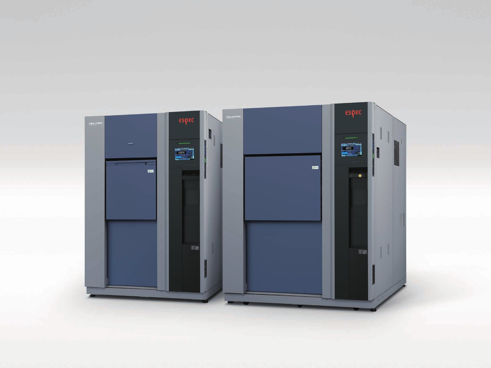
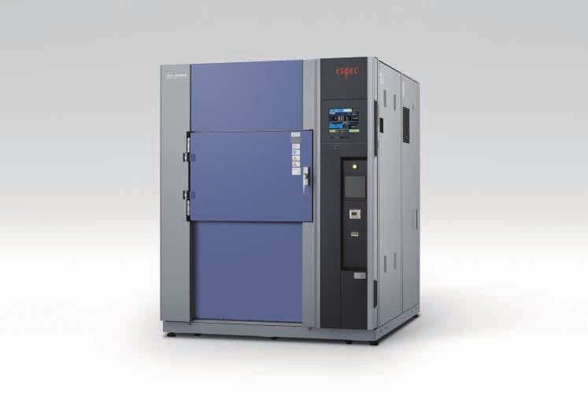
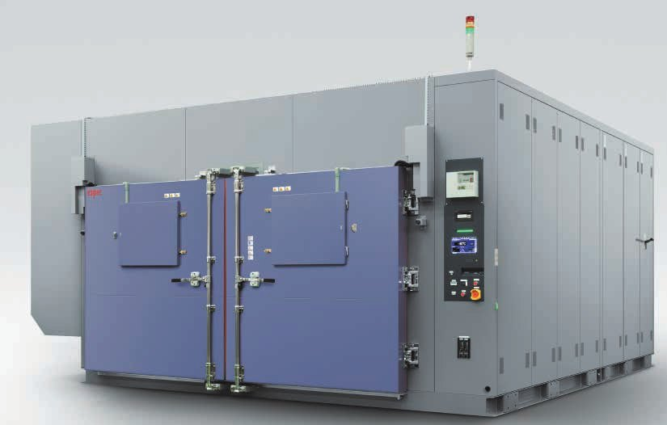

Thermal Shock Chamber TSA
열충격 시험기 TSA · TSE · TSD
고온과 저온의 공기를 급격하게 번갈아 가해 급한 온도 변화를 견디는지 평가합니다.
IEC 60068-2-14 Na화면 한국어 지원

장비 개요
시험품이 움직이지 않는 고정 시험 공간이라 기계적 충격이 없는 공기식 열충격 시험기입니다.
IEC 60068-2-14 Na, MIL-STD-883 규격 시험에 씁니다. 대형, 중량 시험품에 알맞고, 반도체, 전기·전자, 항공·방위 분야에서 쓰입니다.
제이에스 엔지니어링은 1981년부터 ESPEC 한국 총대리점으로 설치, 교정, 유지보수를 책임집니다.
온도 범위
+200°C고온 노출 최대 (TSD +205°C)
-77°C저온 노출 최저 (TSD)
40 ~ 300LTSA 시험 공간 용량
600L, 1100L 대형 라인업은 별도 안내이니 문의해 주세요.
모델별 사양
| 모델 | 고온 노출 | 저온 노출 | 내부 치수 (mm) |
|---|---|---|---|
| TSA-43EL | 주위온도 +50 ~ +200°C | -65 ~ 0°C | W240×H460×D370 |
| TSA-73EL | 주위온도 +50 ~ +200°C | -65 ~ 0°C | W410×H460×D370 |
| TSA-103EL | 주위온도 +50 ~ +200°C | -65 ~ 0°C | W650×H460×D370 |
| TSA-203EL | 주위온도 +50 ~ +200°C | -65 ~ 0°C | W650×H460×D670 |
| TSA-303EL | 주위온도 +50 ~ +200°C | -65 ~ 0°C | W970×H460×D670 |
| TSA-73ES / 103ES / 203ES | +60 ~ +200°C | -70 ~ 0°C | 73ES W410×H460×D370 103ES W650×H460×D370 203ES W650×H460×D670 |
| TSA-73EH고성능 | +60 ~ +200°C | -70 ~ 0°C | W410×H460×D370 |
| TSE-12-A엘리베이터, 11L | +60 ~ +200°C | -65 ~ 0°C | W320×H148×D230 |
| TSD-101-W엘리베이터, 100L | +60 ~ +205°C | -77 ~ 0°C | W710×H345×D410 |
외형 치수와 전원 사양은 [확인 필요]. 출처: ESPEC 공식 제품 페이지 (영문, 새 창).
특징
충격 없음
TSA 고정 시험 공간
시험품이 움직이지 않아 기계적 충격이 없습니다. 대형, 중량 시험품에 알맞습니다.
5분 미만
정확한 온도 회복
예비 냉각·가열로 회복이 정확합니다. TSE-12는 보조 냉각 없이 +150°C와 -65°C 2존 사이에서 5분 미만으로 회복합니다.
30% 절감
TSD-101 소비 전력
냉동 능력 제어 등으로 소비 전력을 30% 줄였습니다.
1000사이클
장시간 운전과 원격 감시
500시간 연속 운전용 제상 불필요 옵션, 웹 브라우저 원격 감시와 유지보수 알림 메일을 지원합니다.
모델별 사진




사진 출처: ESPEC Corp. 제품 카탈로그. [확인 필요] 각 사진의 정확한 모델명.